library(here)
library(readr)
library(dplyr)
library(ggplot2)
library(rsample)
library(dplyr)
library(naniar)
library(tidymodels)
library(nnet)
library(tibble)
library(yardstick)
library(broom)
library(glmnet)Understanding the Impact of Alcohol and Smoking on Obesity Levels
Motivation and Context
This project explores how lifestyle habits like drinking alcohol and smoking may be related to different levels of obesity. Obesity is a major health concern that can lead to serious conditions such as heart disease, diabetes, and certain types of cancer. While many factors can affect a person’s weight, behaviors like drinking and smoking are common and often overlooked when it comes to their possible impact on health.
I chose this topic because it connects real world health issues with data analysis. I wanted to better understand whether habits like alcohol use or smoking are linked to obesity, and if so, how strong those connections are. This kind of information can be helpful not just for individuals who want to learn more about their own health, but also for doctors, public health professionals, or policy makers who want to support healthier communities. By using data and statistical models, this project aims to uncover patterns that can make those links clearer and more understandable.
In this dataset, obesity is divided into seven categories which are: Insufficient Weight, Normal Weight, Overweight Level I, Overweight Level II, Obesity Type I, Obesity Type II, and Obesity Type III. These categories are based on body measurements like weight and height, similar to how Body Mass Index (BMI) is used in medical setting. For example, “Normal Weight” represents a healthy range, while “Overweight Levels I and II” suggest increasing excess weight. “Obesity Types I, II, and III” indicate progressively higher degrees of obesity, with Type III being the most extreme. Understanding how lifestyle behaviors show up across these categories can help reveal what role habits like drinking and smoking might play in influencing a person’s weight and overall health.
Main Objective
The main goal of this project is to investigate how alcohol consumption and smoking relate to obesity levels. I wanted to see whether these habits are useful for predicting which obesity category a person falls into, and whether they still matter when other lifestyle variables are also considered. By analyzing these variables in full models, the project uncovers patterns that show how everyday decisions may relate to obesity risk.
This analysis is meant to provide insight into whether drinking and smoking are just common lifestyle factors or if they actually contribute to higher obesity risk. The findings could be helpful for individuals trying to make healthier choices, as well as for professionals working in health education or policy.
Packages Used In This Analysis
| Package | Use |
|---|---|
| here | to easily load and save data |
| readr | to import the CSV file data |
| dplyr | to massage and summarize data |
| rsample | to split data into training and test sets |
| naniar | to check for missing values |
| ggplot2 | to create nice-looking and informative graphs |
| nnet | to fit multinomial logistic regression |
| tibble | to create and manipulate tidy data frames |
| yardstick | to calculate model performance metrics like accuracy |
| broom | to tidy up model output for easier interpretation |
| glmnet | to fit LASSO models using regularization |
Data Description
The data used in this project comes from the UCI Machine Learning Repository, and it is titled Estimation of Obesity Levels Based on Eating Habits and Physical Condition. This dataset can be accessed here. The dataset was created by researchers Fabio Palechor and Alexis de la Hoz Manotas and published around 2018. The data was collected using a web based survey where anonymous individuals from Mexico, Peru and Colombia reported information about their lifestyle habits and physical conditions. Participants were between the ages of 14 and 61 and answered questions related to eating behavior, exercise, water intake, alcohol consumption, smoking and more.
The goal of the original study was to explore the relationship between these lifestyle factors and obesity. In total, the dataset includes 2,111 observations with 17 variables. The target variable, NObeyesdad, classifies individuals into one of the seven categories that range from Insufficient Weight to Obesity Type III. These categories are based on physical measurements like height and weight and are structured similarly to BMI based classifications.
To improve class balance, the researches used SMOTE (Synthetic Minority Over-sampling Technique) in Weka to generate 77% of the data synthetically. The remaining 23% comes from real survey responses. SMOTE helps ensure that all obesity categories are well represented in the data, which can help models perform more reliably across all classes.
library(readr)
obesity <- read_csv("ObesityDataSet_raw_and_data_sinthetic.csv")Data Limitations
Data Wrangling
# converting character variables to factors
obesity <- obesity |>
mutate(across(where(is.character), as.factor))
# splitting data
set.seed(12345)
obesity_split <- initial_split(obesity, prop = 0.80)
obesity_train <- training(obesity_split)
obesity_test <- testing(obesity_split)
obesity_train <- obesity_train |>
rename(hist_overweight = family_history_with_overweight)
obesity_test <- obesity_test |>
rename(hist_overweight = family_history_with_overweight)total_missing <- sum(is.na(obesity_train))
total_missing[1] 0obesity_train |>
miss_var_summary()# A tibble: 17 × 3
variable n_miss pct_miss
<chr> <int> <num>
1 Gender 0 0
2 Age 0 0
3 Height 0 0
4 Weight 0 0
5 hist_overweight 0 0
6 FAVC 0 0
7 FCVC 0 0
8 NCP 0 0
9 CAEC 0 0
10 SMOKE 0 0
11 CH2O 0 0
12 SCC 0 0
13 FAF 0 0
14 TUE 0 0
15 CALC 0 0
16 MTRANS 0 0
17 NObeyesdad 0 0Exploratory Data Analysis
ggplot(obesity_train,
aes(x = NObeyesdad)) +
geom_bar(fill = "lightblue") +
labs(title = "Count of Individuals by Obesity Category",
x = "Obesity Category",
y = "Count") +
theme(axis.text.x = element_text(angle = 45, hjust = 1))
ggplot(obesity_train,
aes(x = NObeyesdad, y = Weight)) +
geom_boxplot(fill = "purple") +
labs(
title = "Weight Distribution by Obesity Category",
x = "Obesity Category",
y = "Weight (kg)"
) +
theme(axis.text.x = element_text(angle = 45, hjust = 1))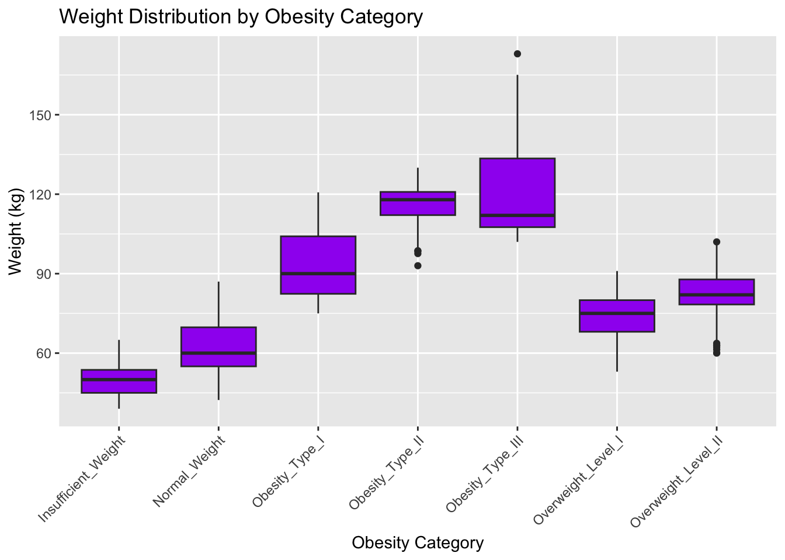
ggplot(obesity_train,
aes(x = NObeyesdad, fill = CALC)) +
geom_bar(position = "dodge") +
labs(
title = "Alcohol Consumption by Obesity Category",
x = "Obesity Category",
y = "Count",
fill = "Alcohol Consumption"
) + theme(axis.text.x = element_text(angle = 45, hjust = 1 ))
ggplot(obesity_train,
aes(x = NObeyesdad, fill = SMOKE)) +
geom_bar(position = "dodge") +
labs(
title = "Proportion of Smokers by Obesity Category",
x = "Obesity Category",
y = "Count",
fill = "Smoke"
) + theme(axis.text.x = element_text(angle = 45, hjust = 1 ))
ggplot(obesity_train,
aes(x = NObeyesdad,
y = FAF)) +
geom_boxplot(fill = "lightpink") +
labs(
title = "Physical Activity (FAF) by Obesity Category",
x = "Obesity Category",
y = "Physical Activity Frequency (FAF)"
) +
theme(axis.text.x = element_text(angle = 45, hjust = 1))
obesity_train |>
group_by(NObeyesdad) |>
summarize(
total = n(),
min = min(FAF, na.rm = TRUE),
Q1 = quantile(FAF, 0.25, na.rm = TRUE),
median = median(FAF, na.rm = TRUE),
Q3 = quantile(FAF, 0.75, na.rm = TRUE),
max = max(FAF, na.rm = TRUE),
mean = mean(FAF, na.rm = TRUE),
sd = sd(FAF, na.rm = TRUE)
)# A tibble: 7 × 9
NObeyesdad total min Q1 median Q3 max mean sd
<fct> <int> <dbl> <dbl> <dbl> <dbl> <dbl> <dbl> <dbl>
1 Insufficient_Weight 223 0 0.520 1.49 2 3 1.30 0.856
2 Normal_Weight 223 0 0 1 2 3 1.31 1.04
3 Obesity_Type_I 259 0 0.0603 1 1.81 3 1.03 0.918
4 Obesity_Type_II 244 0 0.611 1.02 1.39 2 1.00 0.579
5 Obesity_Type_III 262 0 0 0.214 1.43 2 0.639 0.719
6 Overweight_Level_I 233 0 0.379 1 1.68 3 1.08 0.856
7 Overweight_Level_II 244 0 0.106 1 1.47 3 0.974 0.842ggplot(
obesity_train,
aes(x = Height,
y = Weight,
color = NObeyesdad)) +
geom_point(alpha = 0.7) +
labs(
title = "Height vs. Weight by Obesity Category",
x = "Height (m)",
y = "Weight (kg)",
color = "Obesity Category"
) +
theme(legend.position = "right")
ggplot(
obesity_train,
aes(x = NCP)
) + geom_histogram(binwidth = 1, fill = "skyblue", color = "black") +
labs(
title = "Distribution of Number of Main Meals (NCP)",
x = "Number of Main Meals",
y = "Count"
)
ggplot(obesity_train, aes(x = NObeyesdad,
y = NCP)) +
geom_boxplot(fill = "lavender") +
labs(
title = "Number of Main Meals (NCP) by Obesity Category",
x = "Obesity Category",
y = "Number of Main Meals (NCP)"
) +
theme(axis.text.x = element_text(angle = 45, hjust = 1))
ggplot(obesity_train,
aes(x = NObeyesdad,
fill = hist_overweight)) +
geom_bar(position = "dodge") +
labs(
title = "Family History of Overweight by Obesity Category",
x = "Obesity Category",
y = "Count",
fill = "Family History"
) +
theme(axis.text.x = element_text(angle = 45, hjust = 1))
ggplot(obesity_train,
aes(x = NObeyesdad, fill = FAVC)) +
geom_bar(position = "dodge") +
labs(
title = "High-Calorie Food Consumption (FAVC) by Obesity Category",
x = "Obesity Category",
y = "Count",
fill = "FAVC"
) +
theme(axis.text.x = element_text(angle = 45, hjust = 1))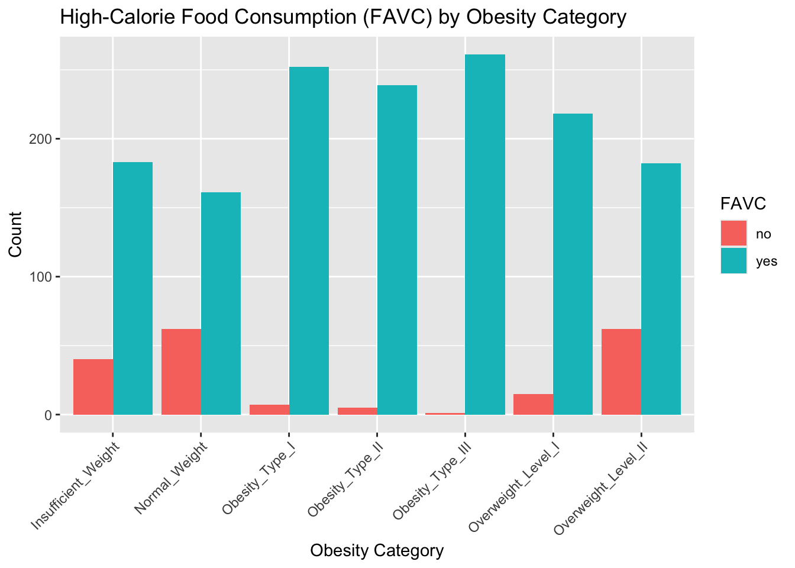
ggplot(obesity_train, aes(x = NObeyesdad, y = FCVC)) +
geom_boxplot(fill = "lightgreen") +
labs(
title = "Vegetable Consumption (FCVC) by Obesity Category",
x = "Obesity Category",
y = "Frequency of Vegetable Consumption"
) +
theme(axis.text.x = element_text(angle = 45, hjust = 1))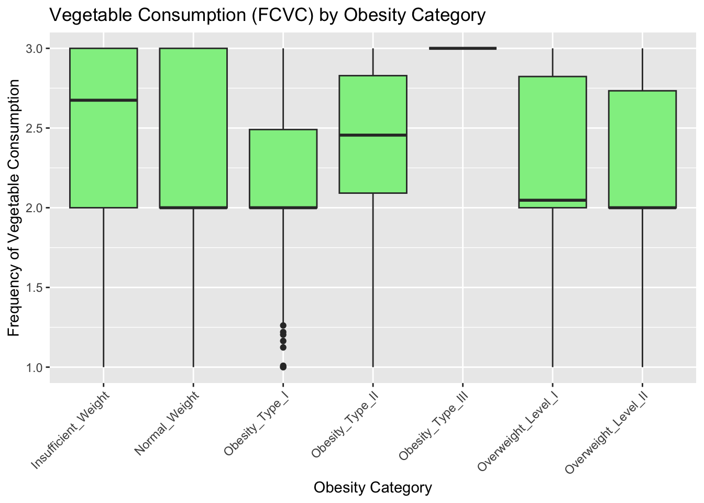
ggplot(obesity_train, aes(x = NObeyesdad, fill = CAEC)) +
geom_bar(position = "dodge") +
labs(
title = "Eating Between Meals (CAEC) by Obesity Category",
x = "Obesity Category",
y = "Count",
fill = "CAEC"
) +
theme_minimal() +
theme(axis.text.x = element_text(angle = 45, hjust = 1))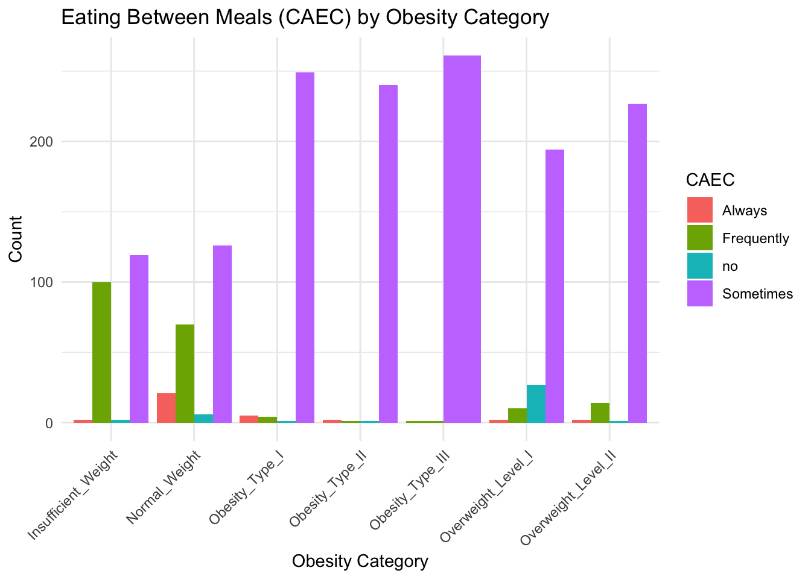
Modeling
Multinomial Logistic Regression
In this section, I build and evaluate models to predict an individual’s obesity category based on their lifestyle habits. I start with a multinomial logistic regression model because it allows me to model a categorical outcome with more than two classes. This model is also interpretable because it provides coefficients that show how predictors affect the odds of being in a specific obesity category compared to a reference group. This helps me understand how variables like alcohol consumption (CALC) and smoking (SMOKE) are related to different obesity levels and whether those behaviors are associated with increased risk.
# make sure outcome variable is a factor
obesity_train$NObeyesdad <- as.factor(obesity_train$NObeyesdad)
obesity_test$NObeyesdad <- as.factor(obesity_test$NObeyesdad)# all predictors to model the 7-category outcome
multinom_model <- multinom(NObeyesdad ~ ., data = obesity_train)# weights: 175 (144 variable)
initial value 3284.696332
iter 10 value 2716.011191
iter 20 value 1825.936578
iter 30 value 1330.345266
iter 40 value 1081.252069
iter 50 value 829.403816
iter 60 value 552.348180
iter 70 value 320.976456
iter 80 value 206.982321
iter 90 value 151.222110
iter 100 value 108.048475
final value 108.048475
stopped after 100 iterationstidy(multinom_model)# A tibble: 144 × 6
y.level term estimate std.error statistic p.value
<chr> <chr> <dbl> <dbl> <dbl> <dbl>
1 Normal_Weight (Intercept) 97.1 4.79 20.3 2.31e-91
2 Normal_Weight GenderMale -1.12 1.40 -0.799 4.24e- 1
3 Normal_Weight Age 0.517 0.116 4.47 7.98e- 6
4 Normal_Weight Height -129. 2.75 -46.9 0
5 Normal_Weight Weight 3.14 0.173 18.1 4.22e-73
6 Normal_Weight hist_overweightyes -2.22 1.40 -1.58 1.14e- 1
7 Normal_Weight FAVCyes -3.79 1.59 -2.38 1.71e- 2
8 Normal_Weight FCVC -1.39 0.926 -1.50 1.34e- 1
9 Normal_Weight NCP -2.28 0.926 -2.46 1.37e- 2
10 Normal_Weight CAECFrequently -5.51 3.55 -1.55 1.21e- 1
# ℹ 134 more rows# predict on obesity category for each oberservation
multinom_preds <- predict(multinom_model, newdata = obesity_test)
# results tibble true and predicted labels
multinom_results <- tibble(
truth = obesity_test$NObeyesdad,
prediction = multinom_preds
)
# evaluate the model performance
conf_mat(multinom_results, truth = truth, estimate = prediction) Truth
Prediction Insufficient_Weight Normal_Weight Obesity_Type_I
Insufficient_Weight 47 1 0
Normal_Weight 2 59 0
Obesity_Type_I 0 0 87
Obesity_Type_II 0 0 1
Obesity_Type_III 0 0 0
Overweight_Level_I 0 4 0
Overweight_Level_II 0 0 4
Truth
Prediction Obesity_Type_II Obesity_Type_III Overweight_Level_I
Insufficient_Weight 0 0 0
Normal_Weight 0 0 2
Obesity_Type_I 0 0 0
Obesity_Type_II 53 0 0
Obesity_Type_III 0 62 0
Overweight_Level_I 0 0 47
Overweight_Level_II 0 0 8
Truth
Prediction Overweight_Level_II
Insufficient_Weight 0
Normal_Weight 0
Obesity_Type_I 2
Obesity_Type_II 0
Obesity_Type_III 1
Overweight_Level_I 4
Overweight_Level_II 39Based on the confusion matrix, the model did a really good job predicting most of the obesity categories correctly. It was especially accurate for Obesity Type I, II, and III, where the predictions were almost perfect. There were a few mistakes, mainly between categories that are close to each other, like Normal Weight being confused with Overweight Level I or Overweight Level II being confused with Obesity Type I. That kind of mix-up makes sense since those groups might have similar habits or measurements. Overall, the model is performing very well across all obesity categories.
accuracy(multinom_results, truth = truth, estimate = prediction)# A tibble: 1 × 3
.metric .estimator .estimate
<chr> <chr> <dbl>
1 accuracy multiclass 0.931I used accuracy and a confusion matrix to evaluate how well the model performed. Accuracy is a common and simple metric that tells me what proportion of the predictions were correct overall. It’s calculated by dividing the number of correct predictions by the total number of predictions. I also included a confusion matrix because accuracy alone doesn’t always show how the model did for each specific class. The confusion matrix helps me see which categories were predicted correctly and which ones the model mixed up, so I can tell if it’s doing well across all obesity levels.
tidy_multinom <- tidy(multinom_model)
smoke_calc <- tidy_multinom |>
filter(term %in% c("SMOKEyes", "CALCno", "CALCsometimes", "CALCalways"))
smoke_calc# A tibble: 12 × 6
y.level term estimate std.error statistic p.value
<chr> <chr> <dbl> <dbl> <dbl> <dbl>
1 Normal_Weight SMOKEyes 55.5 3.12 17.8 1.16e- 70
2 Normal_Weight CALCno -32.8 1.62 -20.2 3.80e- 91
3 Obesity_Type_I SMOKEyes 52.9 2.60 20.4 3.43e- 92
4 Obesity_Type_I CALCno 77.0 2.58 29.8 5.44e-195
5 Obesity_Type_II SMOKEyes 43.9 2.39 18.4 1.68e- 75
6 Obesity_Type_II CALCno 70.3 2.83 24.8 3.02e-136
7 Obesity_Type_III SMOKEyes 21.9 4.96 4.42 9.78e- 6
8 Obesity_Type_III CALCno -71.8 2.04 -35.1 3.63e-270
9 Overweight_Level_I SMOKEyes 49.8 2.03 24.5 9.87e-133
10 Overweight_Level_I CALCno 51.2 2.14 23.9 2.68e-126
11 Overweight_Level_II SMOKEyes 55.4 1.93 28.7 1.43e-181
12 Overweight_Level_II CALCno 99.3 2.02 49.1 0 The model shows that both smoking and alcohol habits are related to obesity. The coefficients for SMOKEyes were large and positive across all categories, meaning smokers had much higher odds of being classified as overweight or obese compared to the baseline group. For alcohol, the results were more surprising. People who said they don’t drink (CALCno) also had higher odds of being classified in an obesity category. This might be due to how alcohol use is reported or other lifestyle factors in the data. Overall, both variables were statistically significant and stood out as important predictors in the model.
Even though my main goal was to understand the impact of smoking and alcohol on obesity, I included other lifestyle variables in the model because they can also affect weight. This makes the model more realistic and helps me see whether smoking and alcohol still matter when everything else is taken into account. Based on the results, both SMOKE and CALC were still strong predictors even after controlling for things like exercise, diet, and family history.
LASSO
To complement the multinomial regression model, I also use a LASSO model. LASSO works by shrinking the coefficients of less important predictors all the way to zero. This means it automatically removes variables that don’t contribute to much to predicting the outcome. I wanted to see if whether smoking and alcohol consumption would still be selected as important predictors after the model was simplified.
I created the model, recipe and workflow as shown below. Categorical variables were converted into dummy variables and all numeric variables were standardized to the same scale since LASSO is sensitive to variable scaling.
lasso_model <- multinom_reg(mode = "classification", engine = "glmnet",
penalty = tune(),
mixture = 1) # 1 is LASSO
lasso_recipe <- recipe(NObeyesdad ~ ., data = obesity_train) |>
step_dummy(all_nominal_predictors()) |> # since they are categorical
step_normalize(all_numeric_predictors()) # same scale
lasso_wflow <- workflow() |>
add_model(lasso_model) |>
add_recipe(lasso_recipe)I used 5 fold cross validation to tune the penalty parameter. I tested 25 (arbitrarily) different values and selected the final model using the one-standard-error rule, which prefers a simpler model that still performs well.
set.seed(12345)
cv_folds <- vfold_cv(obesity_train, v = 5)
lasso_tune <- tune_grid(
lasso_wflow,
resamples = cv_folds,
grid = 25 # different values
)lasso_best <- lasso_tune |>
select_by_one_std_err(penalty, desc(penalty))
lasso_wflow_final <- lasso_wflow |>
finalize_workflow(parameters = lasso_best)
lasso_fit <- lasso_wflow_final |>
fit(data = obesity_train)
lasso_best# A tibble: 1 × 2
penalty .config
<dbl> <chr>
1 2.08e-10 Preprocessor1_Model01The best penalty value selected by cross-validation was approximately 2.08e-10. Since this value is very small, it means the model applied only a small amount of shrinkage, allowing most of the predictors to remain in the model. This suggests that many variables in the dataset were helpful for predicting obesity categories, and not many were removed by LASSO.
# Plot coefficient paths across penalty values
lasso_fit |>
extract_fit_engine() |>
plot(xvar = "lambda", label = TRUE)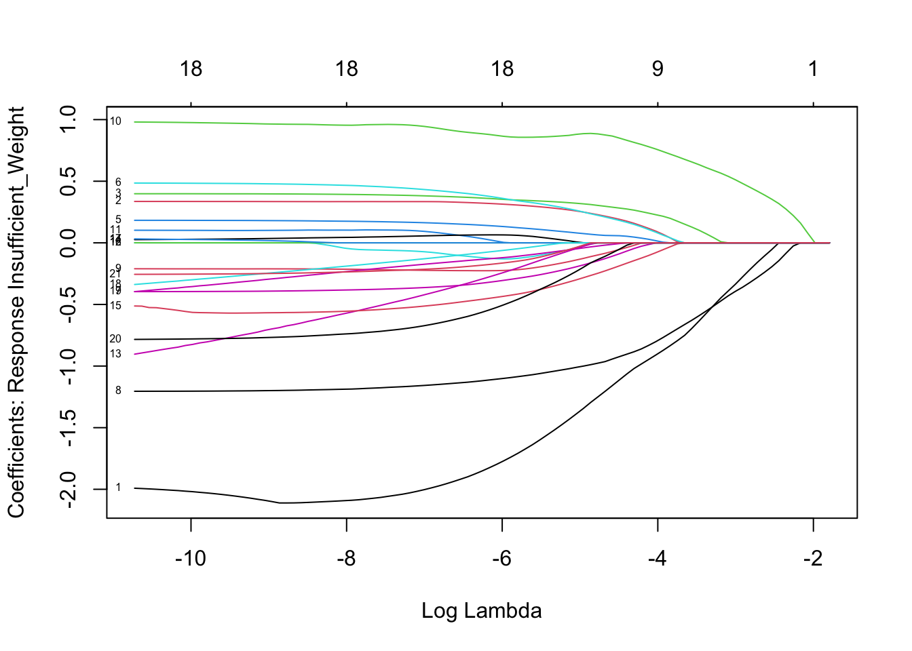
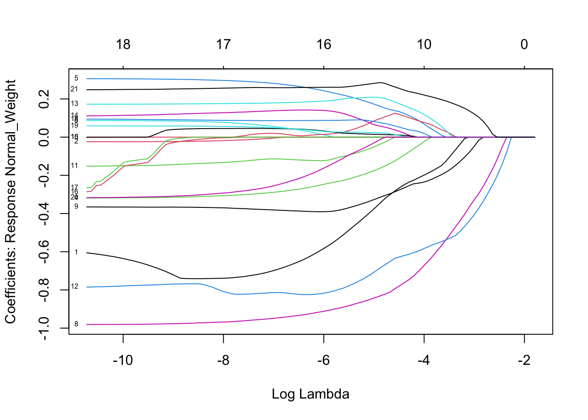
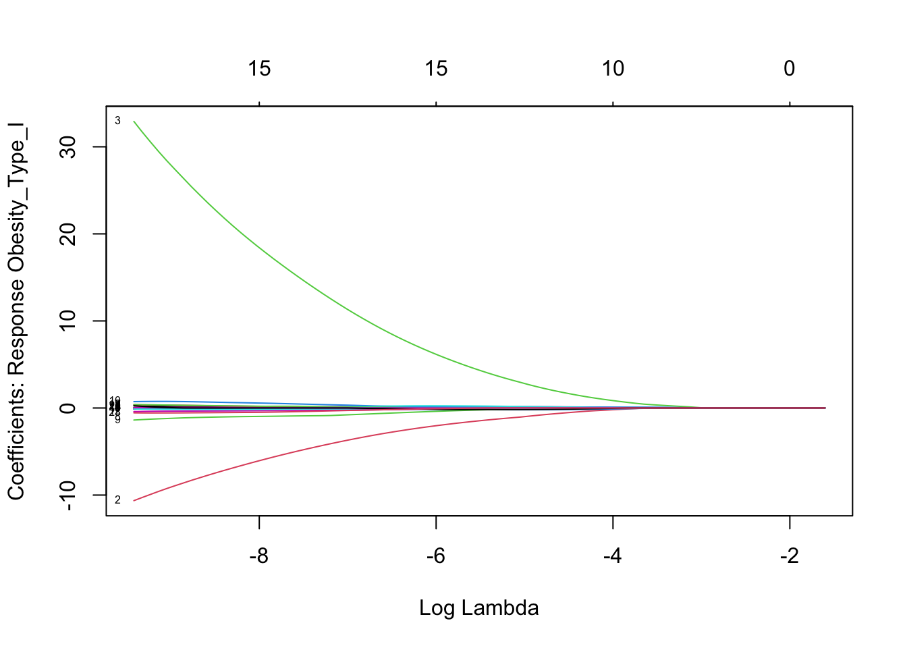
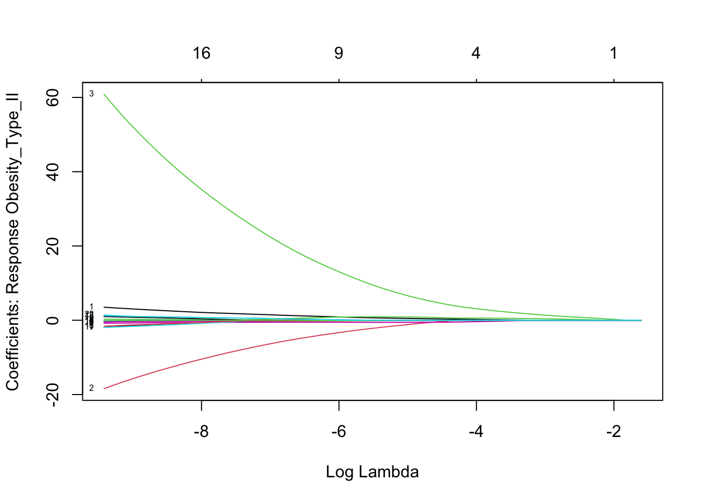
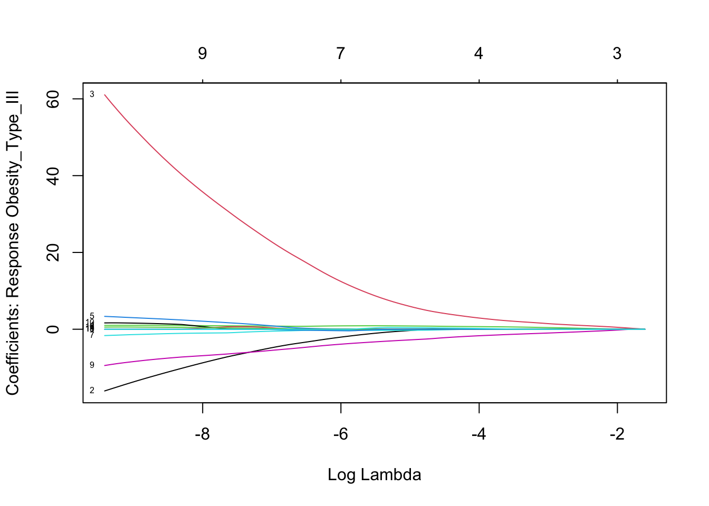
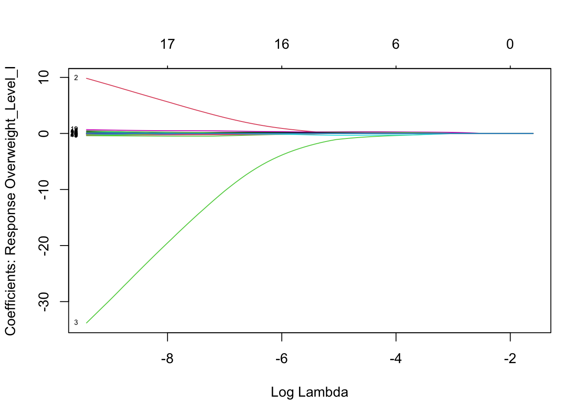
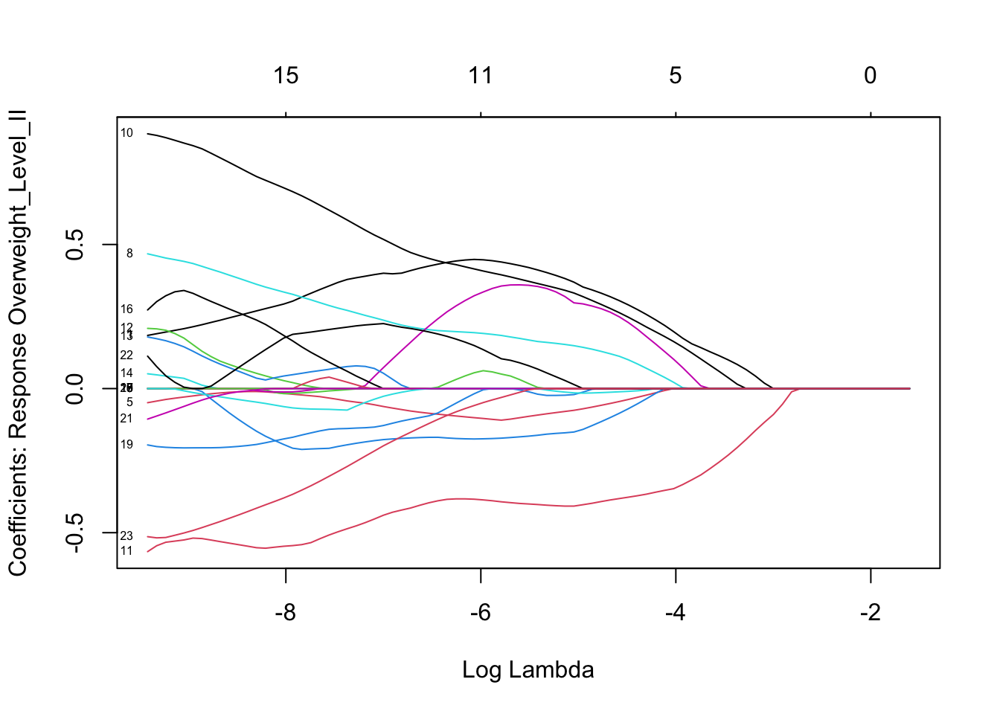
The coefficient path plots show how the values of different predictors change as the penalty term increases. As the penalty increases (moving left to right), the model applies more shrinkage, and many coefficients are pulled closer to zero. This is how LASSO performs variable selection.
In my case, most predictors stayed close to zero early on, meaning they weren’t very strong. However, some predictors remained further from zero longer, suggesting they were more important in predicting that specific obesity category. By looking at these plots, I was able to confirm that LASSO kept only the most useful predictors while filtering out the rest.
After fitting the model, I extracted the coefficients and focused on SMOKE and CALC to see if they were selected by LASSO.
lasso_coef <- lasso_fit |>
broom::tidy()
lasso_coef # A tibble: 168 × 4
class term estimate penalty
<chr> <chr> <dbl> <dbl>
1 Insufficient_Weight (Intercept) -68.3 2.08e-10
2 Insufficient_Weight Age -0.0313 2.08e-10
3 Insufficient_Weight Height 30.9 2.08e-10
4 Insufficient_Weight Weight -121. 2.08e-10
5 Insufficient_Weight FCVC 0.840 2.08e-10
6 Insufficient_Weight NCP 0.379 2.08e-10
7 Insufficient_Weight CH2O 0.335 2.08e-10
8 Insufficient_Weight FAF 1.36 2.08e-10
9 Insufficient_Weight TUE 0 2.08e-10
10 Insufficient_Weight Gender_Male 0.762 2.08e-10
# ℹ 158 more rowsLASSO didn’t shrink that many coefficients to zero, which suggests that a lot of the variables in the dataset are actually useful for predicting obesity categories. This makes sense since the model is trying to classify people into seven different groups, so it needs a range of information to do that well. Even with regularization, LASSO still kept variables like smoking and alcohol, which shows they’re important predictors. The fact that many variables were kept means the model may be capturing more complex relationships between lifestyle habits and obesity levels.
lasso_coef |>
filter(term %in% c("SMOKE_yes", "CALC_no", "CALC_always", "CALC_sometimes"))# A tibble: 14 × 4
class term estimate penalty
<chr> <chr> <dbl> <dbl>
1 Insufficient_Weight SMOKE_yes -0.190 2.08e-10
2 Insufficient_Weight CALC_no -0.164 2.08e-10
3 Normal_Weight SMOKE_yes 0.148 2.08e-10
4 Normal_Weight CALC_no 0 2.08e-10
5 Obesity_Type_I SMOKE_yes 0.0353 2.08e-10
6 Obesity_Type_I CALC_no 0 2.08e-10
7 Obesity_Type_II SMOKE_yes 0 2.08e-10
8 Obesity_Type_II CALC_no 1.16 2.08e-10
9 Obesity_Type_III SMOKE_yes 0 2.08e-10
10 Obesity_Type_III CALC_no 0 2.08e-10
11 Overweight_Level_I SMOKE_yes -0.298 2.08e-10
12 Overweight_Level_I CALC_no 0 2.08e-10
13 Overweight_Level_II SMOKE_yes 0 2.08e-10
14 Overweight_Level_II CALC_no 0 2.08e-10After using LASSO, only the CALC_no variable was kept in the model. The other alcohol-related categories like CALC_always and CALC_sometimes were removed, meaning they didn’t provide enough useful information for predicting obesity categories. This shows that not drinking alcohol had more predictive value than drinking occasionally or always, at least in this dataset.
lasso_preds <- predict(lasso_fit, new_data = obesity_test) |>
bind_cols(obesity_test)
accuracy(lasso_preds, truth = NObeyesdad, estimate = .pred_class)# A tibble: 1 × 3
.metric .estimator .estimate
<chr> <chr> <dbl>
1 accuracy multiclass 0.962conf_mat(lasso_preds, truth = NObeyesdad, estimate = .pred_class) Truth
Prediction Insufficient_Weight Normal_Weight Obesity_Type_I
Insufficient_Weight 48 2 0
Normal_Weight 1 59 0
Obesity_Type_I 0 0 90
Obesity_Type_II 0 0 2
Obesity_Type_III 0 0 0
Overweight_Level_I 0 3 0
Overweight_Level_II 0 0 0
Truth
Prediction Obesity_Type_II Obesity_Type_III Overweight_Level_I
Insufficient_Weight 0 0 0
Normal_Weight 0 0 1
Obesity_Type_I 0 0 0
Obesity_Type_II 53 0 0
Obesity_Type_III 0 62 0
Overweight_Level_I 0 0 51
Overweight_Level_II 0 0 5
Truth
Prediction Overweight_Level_II
Insufficient_Weight 0
Normal_Weight 0
Obesity_Type_I 0
Obesity_Type_II 0
Obesity_Type_III 0
Overweight_Level_I 2
Overweight_Level_II 44The LASSO model had an accuracy of about 96.2%, meaning it correctly predicted the obesity category for most of the people in the test set. This is a strong result, especially since there are seven different categories. It shows that even with regularization and some coefficients being removed, the model still did a really good job at classifying individuals based on their lifestyle habits.
Insights
ggplot(obesity_train,
aes(x = NObeyesdad, fill = CALC)) +
geom_bar(position = "dodge") +
labs(
title = "Alcohol Consumption by Obesity Category",
x = "Obesity Category",
y = "Count",
fill = "Alcohol Consumption"
) + theme(axis.text.x = element_text(angle = 45, hjust = 1 ))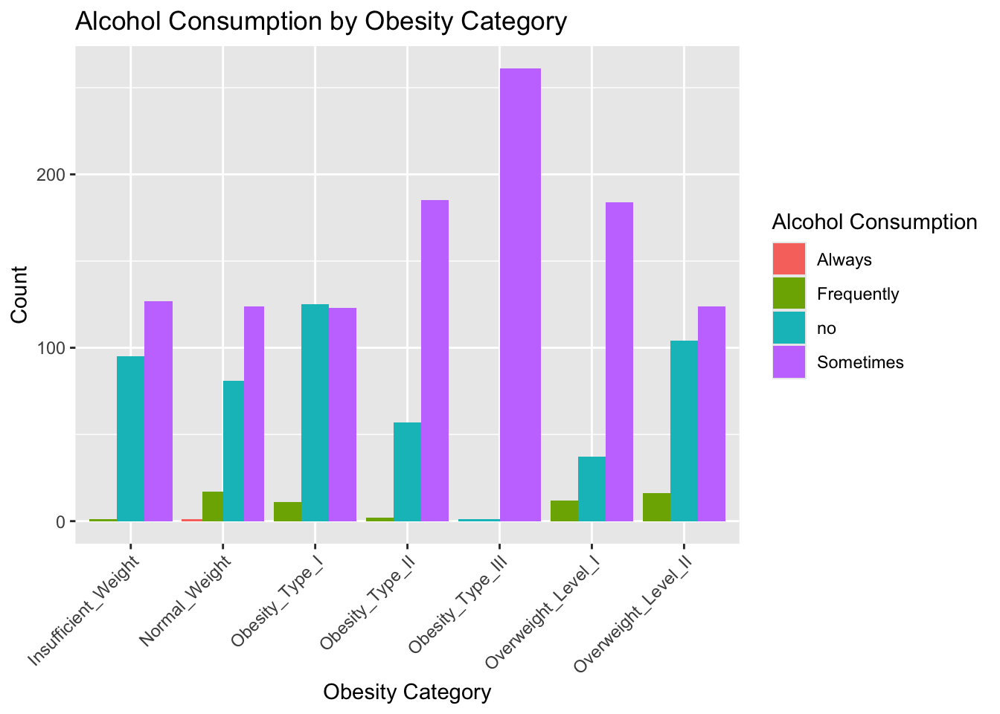
ggplot(obesity_train,
aes(x = NObeyesdad, fill = SMOKE)) +
geom_bar(position = "dodge") +
labs(
title = "Proportion of Smokers by Obesity Category",
x = "Obesity Category",
y = "Count",
fill = "Smoke"
) + theme(axis.text.x = element_text(angle = 45, hjust = 1 ))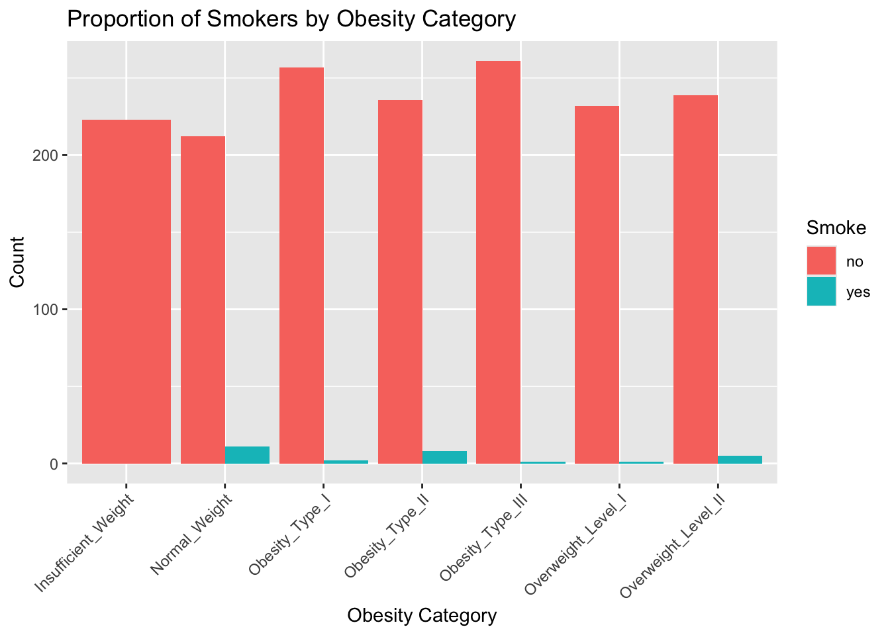
These plots show the relationship between alcohol use, smoking and obesity categories. In the first graph people who drink alcohol “sometimes” make up a large portion of the higher obesity categories, especially Obesity Type III and Overweight Level I. In the second graph, smokers make up a small portion of the dataset overall, but they appear slightly more in some obesity categories like Obesity Type I and II.
In both the multinomial and LASSO models, smoking and not drinking alcohol were selected as predictors in a few obesity categories. However, LASSO removed many of the related terms, and other variables like diet, physical activity, and family history were kept more consistently. So while smoking and alcohol show some connection to obesity, the models suggest they’re not the strongest predictors on their own. This highlights that these habits might play a role, but they work alongside many other factors when it comes to predicting obesity.
Limitations and Future Work
Even though the models in this project did really well overall, there are still a few important limitations. One of the main things is that it’s hard to tell how much smoking and alcohol really affect obesity on their own. Since the models included a bunch of other lifestyle factors, it’s not easy to separate out their impact. SMOKE and CALC showed up as important in some categories, but not all, and LASSO even removed a few of them completely. That makes it seem like they might not be super strong predictors by themselves, or maybe their effect depends on other things like diet or physical activity.
Another thing I ran into is that the dataset doesn’t explain what the different obesity categories actually mean even though at first I thought it did. It uses labels like “Obesity_Type_I” and “Overweight_Level_II,” but there’s no clear definition of what those mean or how different they are. That made it harder to really understand how serious each group is or what separates one from another.
Also, the data is self-reported, which isn’t always reliable. People might leave things out or answer in a way that sounds better, especially for questions about smoking, drinking, or eating habits. On top of that, a lot of the data was synthetically generated using SMOTE (Synthetic Minority Oversampling TEchnique) to balance out the categories. That helps with modeling, but it might not reflect real-world responses as well as actual survey data.
LASSO helped clean up the model by removing predictors that weren’t as helpful, but it didn’t shrink that many variables to zero. That could mean the variables really were useful, or that the penalty wasn’t strong enough to force more selection. Trying other models in the future, like decision trees or random forests, could help show which variables are actually the most important for predicting obesity. But for this project, the main goal was just to see whether smoking and alcohol had any noticeable connection to obesity, and both models helped explore that.
In the future, it would help to have a dataset with more detailed health and lifestyle information, and one that clearly defines the outcome labels especially obesity levels. Since this project is about people’s health, it’s important to use results like these to support and inform one another, and not judge anyone based on which category they fit into